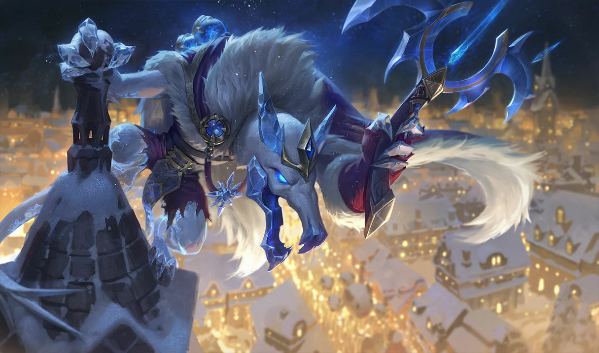
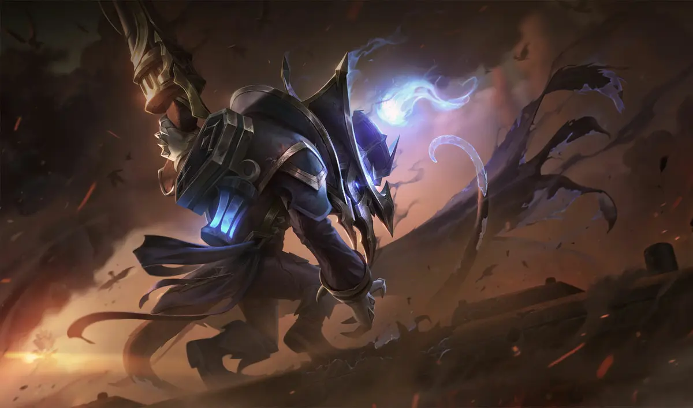
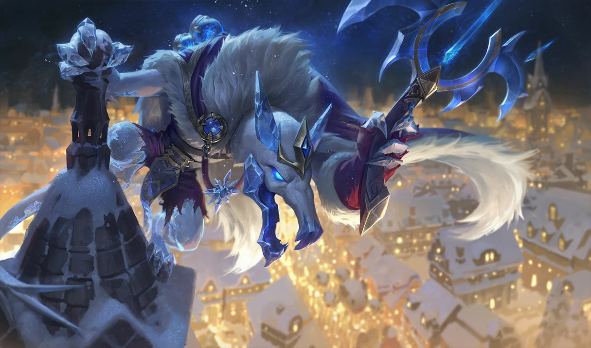
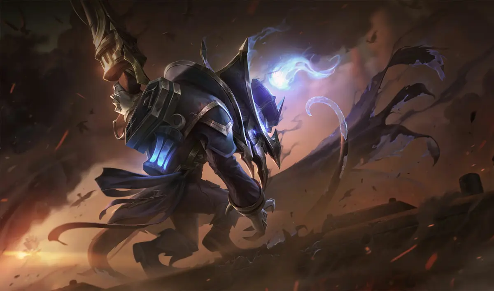

o Semeador da Peste Twitch
Um rato zaunita empesteado de nascença e um apreciador da imundície por paixão, Twitch não tem medo de sujar as patas. Mirando com uma balestra embebida em químicos no centro do coração dourado de Piltover, ele jurou mostrar àqueles na cidade de cima quão imundos eles realmente são. Sempre à espreita, quando ele não está se esgueirando no Sumidouro, ele está cavando fundo no lixo dos outros por tesouros descartados… e talvez um sanduíche bolorento.
 


